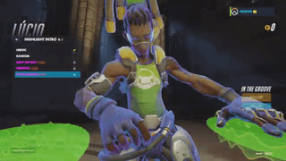
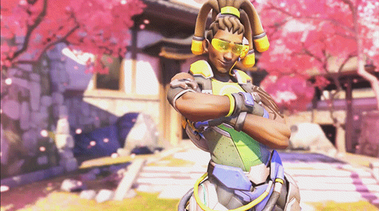
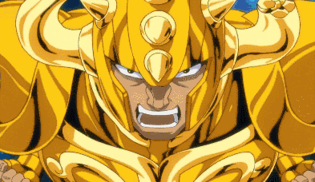
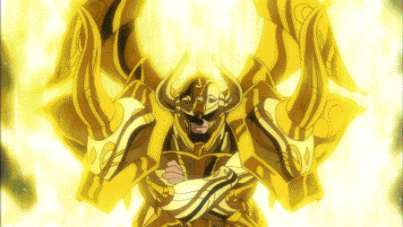
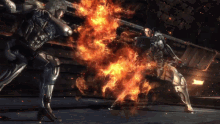

Laura Matsuda (Street Fighter)
Lutadora brasileira de jiu-jitsu do Street Fighter V.
Carismática e elétrica, mistura golpes poderosos e acrobacias, levando o ritmo do Brasil às arenas do mundo.
Além da luta, Laura representa o calor, a alegria e a hospitalidade brasileira. Ela é irmã de Sean Matsuda,
outro lutador da série, e juntos mostram o legado da família Matsuda.
Raze (Valorant)
Duelista de Salvador (BA), Raze é pura explosão e alegria.
Criativa, ousada e divertida, representa o estilo brasileiro em cada movimento com tinta, música e energia.
Sua personalidade expressiva e carismática reflete o espírito do povo brasileiro: animado, brincalhão e
criativo.
Raze é também uma engenheira e artista urbana, misturando cores e explosões de maneira única.
Eddy Gordo (Tekken)
Ícone da capoeira em Tekken, Eddy Gordo mistura dança e luta com fluidez única.
É um símbolo da força e elegância da cultura afro-brasileira dentro dos games.
A história de Eddy mostra superação e orgulho cultural: ele usa a capoeira não só como luta, mas como
expressão de liberdade e identidade brasileira.
Lúcio Correia dos Santos (Overwatch)
DJ e herói do Overwatch, Lúcio usa o poder da música para inspirar e curar.
Representa esperança, união e o som vibrante do Rio de Janeiro levado para o mundo.

Lúcio é uma figura otimista, que acredita no poder da arte e da coletividade para mudar a sociedade.
Sua trilha sonora inspira, motiva e une — um verdadeiro símbolo da alegria brasileira.

Blanka (Street Fighter)
Selvagem e bondoso, Blanka é um brasileiro nascido na Amazônia.
Sua aparência verde e ataques elétricos o tornaram um dos ícones mais reconhecidos da franquia
Street Fighter.
Apesar de sua aparência assustadora, Blanka tem coração gentil e ligação forte com sua mãe.
Ele representa a natureza selvagem e a energia imprevisível do Brasil.
Aldebaran de Touro (Cavaleiros do Zodíaco)
O Cavaleiro de Ouro de Touro, de Os Cavaleiros do Zodíaco, é brasileiro.
Um guerreiro nobre, forte e justo, que representa coragem e lealdade.

Sua imponência e senso de justiça refletem os valores do Brasil: força, honra e respeito.
É um dos poucos personagens brasileiros clássicos em animes japoneses.

Anna Aveiro Nakamura dos Santos Moreira Cuccittini (Nanare Hananare)
Anna é uma líder de torcida com origem brasileira e ascendência japonesa e portuguesa.
Alegre e determinada, é símbolo da diversidade cultural e da energia positiva do Brasil nos animes.
Seu carisma e dedicação refletem o espírito de superação e trabalho em equipe.
Anna representa uma nova geração de personagens brasileiros mais diversos e inspiradores.
Samuel Rodrigues (Metal Gear Rising: Revengeance)
Conhecido como Jetstream Sam, Samuel Rodrigues é um espadachim brasileiro vindo de Recife,
conhecido por sua habilidade e carisma.
Ele aparece como um dos principais rivais de Raiden em Metal Gear Rising: Revengeance.

Sam é um personagem complexo — mistura honra, orgulho e ironia.
Mesmo lutando contra o protagonista, demonstra um forte senso de justiça e respeito pelo combate.
Ele representa o lado filosófico e determinado do guerreiro brasileiro.